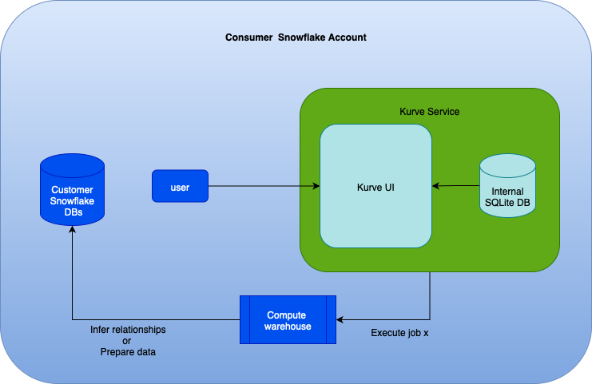
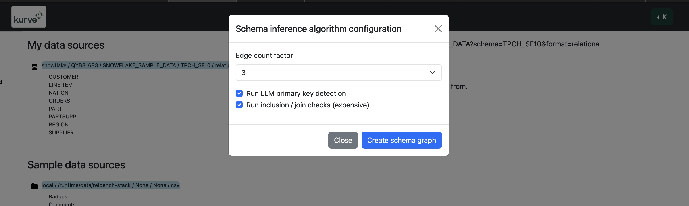
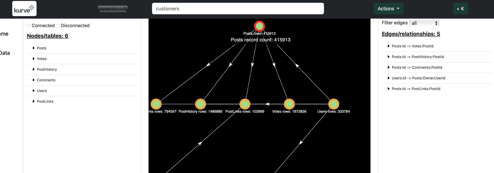
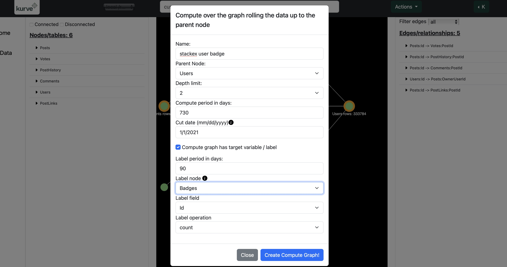

Kurve snowflake native app
Architecture

Configurating the application
After you have installed the Kurve application you will need to run the following Snowflake SQL
with a role with sufficient permissions (e.g., ACCOUNTADMIN). This ensures the KURVE database
and a schema where Kurve can write to are available and accessible to the application.
Post-installation instructions:
```sql
-- Create a database for Kurve to write to or use an existing one
--CREATE DATABASE IF NOT EXISTS MY_OUTPUT_DB;
-- grants the user needs to run after installation
GRANT USAGE ON DATABASE MY_OUTPUT_DB TO APPLICATION <application_name>;
-- create a schema if needed or use an existing one
-- CREATE SCHEMA IF NOT EXISTS MY_OUTPUT_DB.MY_OUTPUT_SCHEMA;
-- grant usage to the application on your output schema
GRANT USAGE ON SCHEMA MY_OUTPUT_DB.MY_OUTPUT_SCHEMA TO APPLICATION <application_name>;
-- grant other permissions on output schema to application
GRANT CREATE TEMPORARY TABLE ON SCHEMA MY_OUTPUT_DB.MY_OUTPUT_SCHEMA TO APPLICATION <application_name>;
GRANT CREATE TABLE ON SCHEMA MY_OUTPUT_DB.MY_OUTPUT_SCHEMA TO APPLICATION <application_name>;
GRANT INSERT, UPDATE, DELETE ON ALL TABLES IN SCHEMA MY_OUTPUT_DB.MY_OUTPUT_SCHEMA TO APPLICATION <application_name>;
-- grant future ownership of Kurve-created table to your rule
-- may need to use ACCOUNTADMIN or admin role...
GRANT SELECT ON FUTURE TABLES IN SCHEMA MY_OUTPUT_DB.MY_OUTPUT_SCHEMA TO ROLE <my_role>;
-- create a warehouse for the application to use
-- MUST BE NAME 'KURVE_WAREHOUSE'!
CREATE WAREHOUSE IF NOT EXISTS KURVE_WAREHOUSE
WAREHOUSE_SIZE = 'X-SMALL';
-- grant usage on kurve warehouse to app
GRANT USAGE ON WAREHOUSE KURVE_WAREHOUSE TO APPLICATION <application_name>;
-- grant the application privileges on SNOWFLAKE_SAMPLE_DATA for sample tests
GRANT IMPORTED PRIVILEGES ON DATABASE SNOWFLAKE_SAMPLE_DATA TO APPLICATION <application_name>;
Checking application status
USE SCHEMA KURVE_APP.KURVE_CORE;
USE ROLE MY_ROLE_WITH_ACCESS;
CALL kurve_app.kurve_core.service_status();
Getting the application endpoint
USE SCHEMA KURVE_APP.KURVE_CORE;
USE ROLE MY_ROLE_WITH_ACCESS;
CALL kurve_app.kurve_core.service_endpoint();
Schema inference on sample data
After you have found the application endpoint and logged in you should see some Sample data sources. You should see a sample data source that shows /runtime/data/relbench/rel-stack. This is the relbench stack exchange dataset.
To infer the relationships between these tables click Create Graph and execute with the following parameters:

You should now see the following metadata graph

Compute graphs
With the schema graph created earlier we can create a compute graph. We're using the relbench stack exchange dataset. For this compute graph we'll build the graph for the user badge problem of predicting if a user will get a badge in the next 90 days.
To do this we need to orient the problem around the user dimension and include all tables within 2 joins. The cut off date for this problem is 1/1/2021 and we'll look at 2 years of hisory so we get the following compute graph parameters:

Leveraging compute graphs for analytics and AI
In a snowpark session within Snowflake you should be able to run the following code to train a model on the dataset created from the compute graph. The below snippet of code assumes the sample data from above was used.
import snowflake.snowpark as snowpark
from snowflake.snowpark.functions import (
col, lit, coalesce, expr, stddev, sum as ssum, avg, count
)
from snowflake.snowpark.types import (
IntegerType, LongType, ShortType, ByteType,
DecimalType, FloatType, DoubleType
)
from snowflake.ml.modeling.preprocessing import StandardScaler, LabelEncoder
from snowflake.ml.modeling.xgboost import XGBClassifier
def main(session: snowpark.Session):
# YOU MAY NEED TO CHANGE THE TABLE NAME
table_name = "MY_OUTPUT_DB.MY_OUTPUT_SCHEMA.STACKEX_USER_BADGE"
raw_label = "BADG_ID_LABEL"
enc_label = f"{raw_label}_ENC"
# 1) numeric features (exclude label)
schema = session.table(table_name).schema
numeric_types = (IntegerType, LongType, ShortType, ByteType, DecimalType, FloatType, DoubleType)
features = [
f.name for f in schema
if isinstance(f.datatype, numeric_types) and f.name.upper() != raw_label.upper()
]
if not features:
raise ValueError("No numeric features found in table.")
# 2) cast features to FLOAT; keep label; drop null labels
df = session.table(table_name).select(
*[coalesce(col(c).cast("FLOAT"), lit(0)).alias(c) for c in features],
col(raw_label).alias(raw_label)
).filter(col(raw_label).is_not_null())
# 3) encode label -> 0..K-1 and **REPLACE** the original column, ensure INT dtype
le = LabelEncoder(input_cols=[raw_label], output_cols=[enc_label])
le.fit(df) # fit on full set of labels is okay for the label column
df = le.transform(df)
df = df.drop(raw_label).with_column_renamed(enc_label, raw_label)
df = df.with_column(raw_label, col(raw_label).cast("INT"))
# 4) split FIRST
df = df.with_column("random_split", expr("RANDOM()"))
train_df = df.filter(expr("random_split <= 0.8")).drop("random_split")
test_df = df.filter(expr("random_split > 0.8")).drop("random_split")
# 5) drop zero-variance cols **based on train**
stds_row = train_df.agg(*[stddev(col(c)).alias(c) for c in features]).collect()[0].as_dict()
features = [c for c in features if stds_row.get(c) not in (None, 0, 0.0)]
if not features:
raise ValueError("All numeric features are constant or null in the training split.")
# 6) scale explicitly and detect actual output cols
scaled_cols = [f"{c}_scaled" for c in features]
scaler = StandardScaler(input_cols=features, output_cols=scaled_cols)
scaler.fit(train_df)
train_scaled_full = scaler.transform(train_df)
test_scaled_full = scaler.transform(test_df)
existing_scaled = [c for c in scaled_cols if c in train_scaled_full.columns]
input_cols = existing_scaled if existing_scaled else [c for c in features if c in train_scaled_full.columns]
if not input_cols:
raise ValueError("No input columns available after scaling/transform.")
# 7) select features + encoded INT label
train_scaled = train_scaled_full.select(*input_cols, raw_label)
test_scaled = test_scaled_full.select(*input_cols, raw_label)
# Ensure labels are 0..K-1 integers and set num_class accordingly
num_class = train_scaled.select(col(raw_label)).distinct().count()
clf = XGBClassifier(
input_cols=input_cols,
label_cols=[raw_label],
output_cols=["PREDICTION"],
max_depth=5,
n_estimators=100,
num_class=num_class, # explicit for multi-class
# objective could be set, e.g., objective="multi:softprob"
)
clf.fit(train_scaled)
# --- Evaluate on test split ---
preds = clf.predict(test_scaled).select(raw_label, "PREDICTION")
# 1) Overall accuracy
accuracy_df = preds.select(
avg((col("PREDICTION") == col(raw_label)).cast("int")).alias("accuracy")
)
print("=== Overall Accuracy ===")
accuracy_df.show()
# 2) Confusion matrix (actual vs predicted)
confusion_df = (
preds.group_by(raw_label, col("PREDICTION"))
.agg(count(lit(1)).alias("count"))
.sort(raw_label, col("PREDICTION"))
)
print("=== Confusion Matrix (actual vs predicted) ===")
confusion_df.show(200) # increase limit if many classes
# 3) Per-class precision, recall, F1, support
classes_df = preds.select(col(raw_label).alias("CLASS")).distinct()
# Cross-join to compute TP/FP/FN per class
joined = preds.cross_join(classes_df)
per_class_counts = (
joined.select(
col("CLASS"),
((col("PREDICTION") == col("CLASS")) & (col(raw_label) == col("CLASS"))).cast("int").alias("tp1"),
((col("PREDICTION") == col("CLASS")) & (col(raw_label) != col("CLASS"))).cast("int").alias("fp1"),
((col("PREDICTION") != col("CLASS")) & (col(raw_label) == col("CLASS"))).cast("int").alias("fn1"),
(col(raw_label) == col("CLASS")).cast("int").alias("support1"),
)
.group_by("CLASS")
.agg(
ssum(col("tp1")).alias("tp"),
ssum(col("fp1")).alias("fp"),
ssum(col("fn1")).alias("fn"),
ssum(col("support1")).alias("support"),
)
)
metrics = (
per_class_counts
.with_column("precision", expr("tp / NULLIF(tp + fp, 0)"))
.with_column("recall", expr("tp / NULLIF(tp + fn, 0)"))
.with_column("f1", expr("2 * precision * recall / NULLIF(precision + recall, 0)"))
.sort(col("CLASS"))
)
print("=== Per-class metrics ===")
metrics.show(200)
# If you want weighted averages across classes:
weighted = (
metrics.select(
(col("precision") * col("support")).alias("w_p"),
(col("recall") * col("support")).alias("w_r"),
(col("f1") * col("support")).alias("w_f"),
col("support")
)
.agg(
ssum(col("w_p")).alias("sum_wp"),
ssum(col("w_r")).alias("sum_wr"),
ssum(col("w_f")).alias("sum_wf"),
ssum(col("support")).alias("sum_support")
)
.select(
(col("sum_wp")/col("sum_support")).alias("precision_weighted"),
(col("sum_wr")/col("sum_support")).alias("recall_weighted"),
(col("sum_wf")/col("sum_support")).alias("f1_weighted")
)
)
print("=== Weighted (by support) precision/recall/F1 ===")
weighted.show()
# Optional: if you also want probabilities/LogLoss/ROC-AUC (macro),
# call predict_proba and compute metrics similarly using the probability columns.
return weighted